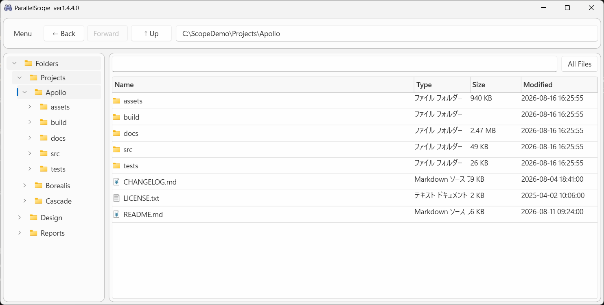
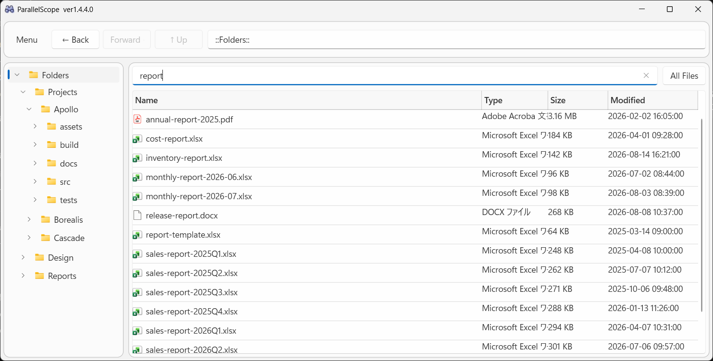
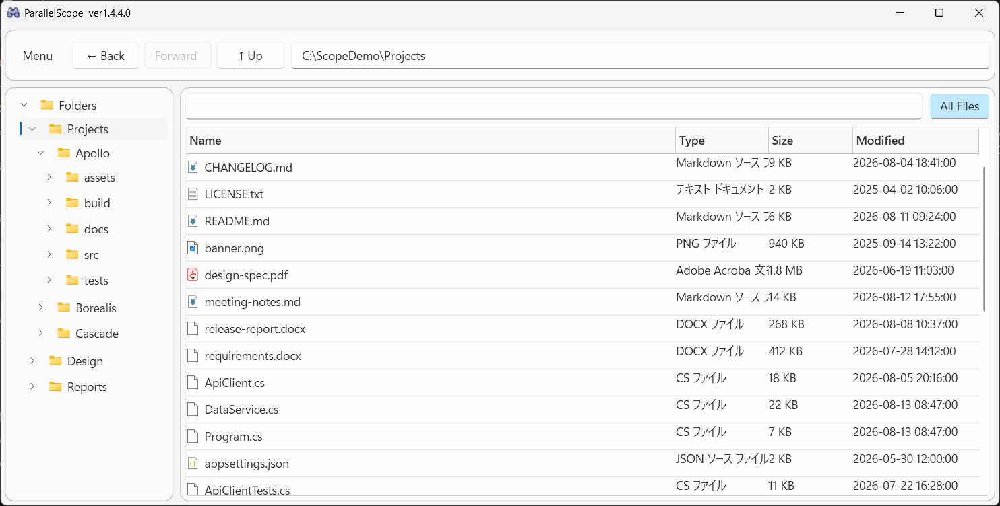
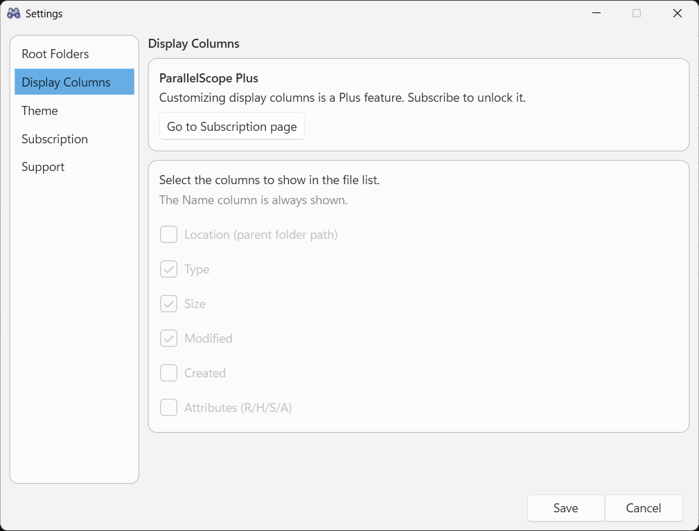
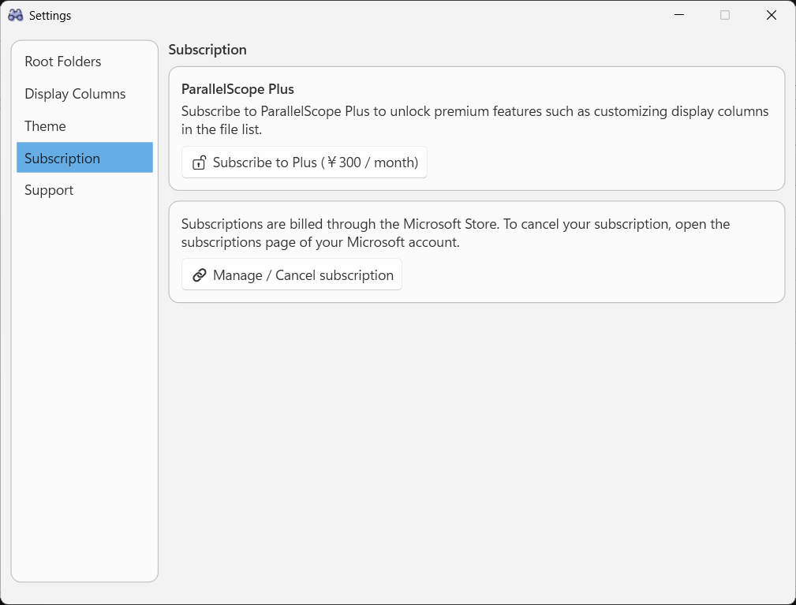

目次
ParallelScope とは 画面の見方 最初にすること（ルートフォルダの登録） フォルダを見る・移動する お気に入り・最近開いたフォルダ・よく使うフォルダ 検索する All Files モード タブと画面分割 右クリックメニュー スキャンとキャッシュ 表示のカスタマイズ CSVへ書き出す ParallelScope Plus データの保存先 困ったときは
ParallelScope とは
ParallelScope は、バラバラの場所にあるフォルダを 1 つのツリーにまとめて 扱うためのファイルブラウザです。
たとえば「作業中のプロジェクト」「デザイン素材」「レポート置き場」のように離れた場所にあるフォルダをルートとして登録しておくと、
エクスプローラーのウィンドウを行き来せずに、1 つの画面から参照・検索できます。
フォルダ構成とファイル一覧はローカルの SQLite キャッシュに保存されます。表示はまずキャッシュから行われるため、
フォルダを開いた瞬間に一覧が出て、そのあとバックグラウンドで実際のファイルシステムを読み直して内容が最新化されます。
ネットワーク越しの NAS のように応答が遅い場所でも待たされにくいのが特徴です。
このページの画面写真はすべて C:\ScopeDemo 配下に用意したダミーデータで撮影したものです。実際のフォルダ構成とは関係ありません。
画面の見方

1
2
3
4
5
6
7
Menu — タイトルバー（アプリ名の左）にあります。設定画面を開くほか、表示中の一覧のCSV出力と、この使い方ガイドへのリンクがあります。← Back / Forward → / ↑ Up — 移動履歴を戻る・進む、親フォルダへ上がる。アドレスバー — 現在地のフルパス。直接入力して Enter でそのフォルダへ移動できます。検索ボックス — 入力するたびに現在フォルダ配下を検索します（インクリメンタルサーチ）。All Files トグル — 現在フォルダ配下のファイルをすべてフラットに表示します。フォルダツリー — 最上位の「Folders」の下に、登録したルートフォルダが並びます。Plusを購読していると、その上に「★ Favorites」「🕘 Recent」「🕒 Frequently Used」が並びます。ファイル一覧 — 選択中フォルダの内容。列見出しをクリックすると並べ替えできます。
最初にすること（ルートフォルダの登録）
インストール直後はルートフォルダが未登録で、デスクトップが暫定的に表示されます。まずは見たいフォルダを登録します。
「Menu」→「⚙ Settings」を開く 「Root Folders」ページで、登録したいフォルダのフルパスを入力して「Add」
必要なら「Excluded Folders」に除外したいフォルダを追加
node_modules や bin のように中身が多くて見る必要のないフォルダを指定しておくと、ツリー・一覧・検索・スキャンのすべてから外れます。「Save + Full Scan」で保存してスキャンを実行
除外フォルダはフルパス指定です。 「node_modules という名前をすべて除外」のようなパターン指定ではなく、指定したパスとその配下だけが対象になります。
フォルダを見る・移動する
ツリーで選択 — 左のツリーでフォルダをクリックすると、右側にその直下の内容が表示されます。> をクリックすると子フォルダを展開します（展開時に読み込まれます）。ダブルクリック — 一覧のフォルダをダブルクリックするとその中へ移動、ファイルをダブルクリックすると既定のアプリで開きます。Back / Forward / Up — ブラウザと同じ感覚で移動履歴を行き来できます。アドレスバー — パスを貼り付けて Enter を押すと、そのフォルダへ直接移動します。並べ替え — 「Name」「Size」「Modified」などの列見出しをクリックすると並べ替えできます。サイズや日時は表示文字列ではなく元の値で比較されるため、9 KB と 12 MB のような大小も正しく並びます。
最上位の「Folders」
ツリーの一番上にある「Folders」は、登録したすべてのルートをまとめた仮想フォルダです。実在するパスではないため、
選択するとアドレスバーには ::Folders:: と表示され、一覧には各ルートが 1 行ずつ並びます。
ここを選んだ状態で検索すると、すべてのルートを横断して検索 できます。
Plusを購読していると、その上に「★ Favorites」「🕘 Recent」「🕒 Frequently Used」の 3 つの仮想フォルダが並びます。動きは「Folders」と同じで、
アドレスバーには ::Favorites:: / ::Recent:: / ::Frequent:: と表示され、一覧にはそのノードに集めたフォルダが 1 行ずつ並び、
そこで検索すれば集めたフォルダを横断して検索できます。詳しくはお気に入り・最近開いたフォルダ・よく使うフォルダ を参照してください。
フォルダのサイズ表示
一覧のフォルダ行に表示されるサイズは、キャッシュから集計した配下の合計サイズです。まだスキャンされていないフォルダでは空欄になり、
スキャンが進むと表示されます。
お気に入り・最近開いたフォルダ・よく使うフォルダ
よく開くフォルダを片っ端からルートに登録していくと、かえって見通しが悪くなります。そこでツリーの最上位には、
自分で選んで並べるものが 1 つと、アプリが自動で並べるものが 2 つ、合わせて 3 つのショートカット用ノードを用意しています。
いずれも ParallelScope Plus の機能
★ Favorites（お気に入り）
ツリーでフォルダを右クリックして「★ Add to Favorites」 で登録します。登録済みのフォルダを右クリックすると「☆ Remove from Favorites」 になり、解除できます。
登録した順に並び、ルートフォルダと同じようにそれぞれ展開して配下をたどれます。
「★ Favorites」ノード自体を選ぶとお気に入りが一覧表示され、そのまま検索すると登録した全フォルダを横断して検索できます。
登録内容は settings.json に保存されるので、次回起動時も残ります。切断中のNAS配下のお気に入りも、消さずにそのまま保持します。
🕘 Recent（最近開いたフォルダ）
最近開いたフォルダが新しい順に、最大20 件 並びます。
元になる記録は「Frequently Used」と同じ（自分で操作した移動だけ ）ですが、回数ではなく最後に開いた時刻の新しい順に並べます。
お気に入りに登録済みのフォルダは除外されるので、複数のノードに同じフォルダが重複して並ぶことはありません。除外フォルダも並びません。
並べ替えは起動時とノードを展開したときにだけ行います。ノード自体を選んだときの一覧は、常に最新の順で並びます。
🕒 Frequently Used（よく使う）
フォルダを開いた回数を数えて、多い順に上位 10 件 を並べます（同数の場合は最後に開いた時刻が新しい順）。
数えるのは自分で操作した移動だけ です（ツリーのクリック、一覧のダブルクリック、Back / Forward / Up、アドレスバー）。起動時などにアプリが自動で開いたフォルダは数えません。
お気に入りに登録済みのフォルダは除外されるので、複数のノードに同じフォルダが重複して並ぶことはありません。除外フォルダも並びません。
並べ替えは起動時とノードを展開したときにだけ行います。移動のたびに並べ替えると、操作中にツリーが目の前で動いてしまうためです。
検索する

「Folders」を選んだ状態で report と入力したところ。登録した全ルートの結果がまとめて出ます。
検索ボタンはありません。 検索ボックスに文字を入力すると、その都度自動的に検索されます。検索範囲は現在表示しているフォルダの配下 です。全体を探したいときは、ツリーの最上位「Folders」を選んでから入力します。
検索はキャッシュに対して行われます 。実際のファイルシステムを歩き回らないので、NAS などでも待たされません。逆に、スキャン後に増えたファイルは次のスキャンまでヒットしません。
検索ボックスを空にすると、元のフォルダ表示に戻ります。
除外フォルダの中身は検索結果に出ません。
All Files モード

「All Files」がONのとき、現在フォルダ配下のファイルがサブフォルダの階層に関係なく 1 つのリストに並びます。
右上の「All Files」をONにすると、選択中フォルダの配下すべてのファイル を再帰的に一覧表示します（フォルダ行は出ません）。
「どのフォルダに入れたか忘れたが、とにかく全部見たい」というときに便利です。
この表示もキャッシュから作られるため、直近のスキャン時点の内容になります。
ONのまま別のフォルダを選ぶと、そのフォルダ配下のファイルに切り替わります。
ONのまま検索すると、結果はファイルのみになります。
ON / OFF の状態はタブごとに保存され、次回起動時も引き継がれます。
タブと画面分割（ParallelScope Plus の機能）
フォルダを複数開いたまま行き来したいときは、タブと画面分割が使えます。
どちらも ParallelScope Plus の機能で、未購読の間はタブ列が表示されず、メニューの「画面を分割する」も選べません。
タブ
タブ列は画面の一番上に出ます。右端の「＋」で新しいタブが開き、いま見ているフォルダと同じ場所から始まります。
タブの「✕」または中クリックで閉じます。最後の 1 つは閉じられません。
タブはドラッグで並べ替えられます。
タブごとに、現在のフォルダ・戻る/進むの履歴・検索語・All Files モード・一覧の並び順を別々に持ちます。
1 つのペインに開けるタブは 20 個までです。
ツリーのフォルダを右クリックした「Open in New Tab」、一覧のフォルダ行の中クリックでも新しいタブで開けます。
ショートカット 動作
Ctrl + T 新しいタブを開く Ctrl + W いま見ているタブを閉じる Ctrl + Shift + T 閉じたタブを開き直す（アプリ実行中の直近 10 件まで） Ctrl + Tab / Ctrl + Shift + Tab 次 / 前のタブへ移る Ctrl + 1 〜 8 左から数えたその位置のタブへ移る Ctrl + 9 いちばん右のタブへ移る F6 （分割中）操作するペインを切り替える
画面分割（2 画面）
「メニュー > 画面を分割する」で画面を 2 つに分けます。向きは「左右に分割」「上下に分割」から選べます。
分割したそれぞれの側（ペイン）が、フォルダツリー・アドレス欄・検索欄・タブ列・ファイル一覧を 1 組ずつ持ちます。左右（上下）で別のフォルダを並べて見比べられます。
操作の対象になっているペインは枠線で示されます。クリックするか F6 で切り替わります。メニューの CSV 書き出しなども、こちらのペインが対象です。
間の仕切りをドラッグすると配分を変えられます。配分は保存されます。
タブは反対側のペインへドラッグして移せます。ツリー・一覧の右クリックの「Open in Other Pane」でも反対側で開けます（1画面のときは、これを選ぶとその場で分割します）。
分割をやめると、閉じる側のタブは残る側の末尾へ移ります。
ファイル一覧の表示列・列幅・並び順は両方のペインで共通の設定です。分割中に片側で列幅を変えると、その値が共通の設定として保存されます。
開いていたタブと分割の状態は保存され、次回起動時に復元されます（検索語は復元されません）。
フォルダが無くなっていたタブは、最初のルートフォルダに寄せて開きます。
スキャンとキャッシュ
ParallelScope の表示と検索は SQLite のキャッシュを土台にしています。キャッシュは次の 3 つの方法で更新されます。
自動フルスキャン — アプリ起動時に 1 回、以降は設定した間隔（既定 3 時間）ごとに、登録した全ルートをスキャンします。実行中はツリーのルート名の左でアイコンが回転します。Save + Full Scan — 設定画面で保存と同時に全体スキャンを実行します。ルートを追加・変更した直後におすすめです。フォルダ単位スキャン — ツリーでフォルダを右クリックして「Scan everything under this folder」。そのフォルダ配下だけを更新するので、全体スキャンより短時間で済みます。
このほか、フォルダを開いた直後にはその直下だけ が実ファイルシステムから読み直され、一覧とキャッシュが更新されます。
「ファイルを追加したのに検索でヒットしない」という場合は、そのフォルダをスキャンするか、次の自動フルスキャンを待ってください。
スキャン中もアプリはそのまま操作できます。スキャン実行中に設定画面から「Save + Full Scan」を再度実行すると、走っているスキャンを中断して新しい設定でやり直します。
表示のカスタマイズ
配色テーマ
表示言語
「Settings > Language（言語）」で、アプリ内の表示を英語と日本語のどちらにするかを選べます。既定の「システム（Windowsに合わせる）」は
Windowsの表示言語に追従します。配色テーマと同じく、選んだ瞬間に適用・保存される（Saveボタンは不要）設定で、無料版でも使えます。
メニュー・設定画面・ファイル一覧の列見出し・ツリーの「★ Favorites」「🕘 Recent」「🕒 Frequently Used」まで、その場で切り替わります。
Type 列だけは例外 です。この文字列はWindows自身が返す種類名のため、この設定ではなくOSの表示言語 に従います。CSV出力の見出しは、他のツールや表計算ソフトでそのまま扱えるよう英語のままです。
このページの画面写真は英語表示のまま撮っています。設定画面のページ名などは、日本語表示にすると訳語に変わります。
フォルダツリー（ParallelScope Plus の機能）
「Settings > Folder Tree（フォルダツリー）」では、ツリー最上位に表示するショートカットのノードと、その並び順 を選べます。
「★ Favorites」「🕘 Recent」「🕒 Frequently Used」にチェックを入れると表示され、「↑ Up」「↓ Down」で並べ替えられます。
「Folders」はツリーが空になってしまうため非表示にはできませんが、位置は入れ替えられるので、ルートフォルダを一番上に置くこともできます。
変更は保存したときに反映されます。表示中のノードを非表示にした場合は、一覧が「Folders」に戻ります。
非表示にしても記録は消えません。「Recent」「Frequently Used」は裏で並び続け、お気に入りもそのまま残ります。
ノード自体と同じく Plus の機能です。未購読の間は 3 つとも表示されませんが、設定は保存されているので購読すればそのまま復活します。
列の表示・並び順・幅（ParallelScope Plus 機能）

未購読の場合、このページは薄字で表示され操作できません。
「Settings > Display Columns（表示する列）」では、ファイル一覧にどの列を出すかと、その並び順 をまとめて指定できます。
チェックを入れた列が表示され、「↑ Up」「↓ Down」で順番を入れ替えられます。選べる列は Location（親フォルダのパス）・Type・Size・Modified・Created・Attributes で、
Name 列は常に表示されますが、並び順の変更対象には含まれます。
ヘッダーのドラッグ操作も保存されます。 ファイル一覧の列見出しをドラッグして順番を入れ替えたり、境目をドラッグして幅を変えたりした結果は、アプリを閉じるときにまとめて保存され、次回起動時に復元されます。「Reset columns to defaults」 で、表示列・並び順・列幅をまとめて既定（Name / Type / Size / Modified）へ戻せます。列幅は保存した時点でリセットされます。これらは有料の Plus 機能です。未購読の間は既定の Name / Type / Size / Modified が既定の並び順で表示されます。設定自体は残るので、購読すれば以前のレイアウトがそのまま復活します。
隠しファイル・システムファイルの表示
同じ「Settings > Display Columns（表示する列）」ページの下側に「Hidden and system items（隠しファイル・システムファイル）」 があり、隠し属性のファイル/フォルダーと
システム属性のファイル/フォルダーを、それぞれ表示するかどうかをチェックボックスで選べます。既定はどちらも表示 で、
チェックを外すとファイル一覧とフォルダツリーのどちらにも出さなくなります。上の列の設定と違い、こちらは無料版でも使えます。
変更は設定を保存したときに反映されます。キャッシュは属性に関わらず全件記録していて、絞り込みは表示のときに行うため、スキャンし直す必要はありません。
エクスプローラーの既定とは逆で、ParallelScope は指定しない限り隠し・システム属性の項目も表示します。これまで見えていたファイルが更新後に消えてしまわないことを優先しています。
CSVへ書き出す
「Menu」→「📄 Export CSV...」 で、いま表示している一覧をCSVファイルへ書き出せます。
ParallelScope Plus の機能
書き出されるのは画面で見えているとおりの内容 です。行の順番（ヘッダークリックの並べ替え結果）も表示中の列もそのまま出ます。検索結果や All Files 表示のままでも書き出せるので、絞り込んでから必要な分だけ出す使い方ができます。保存ダイアログの「ファイルの種類」 で、Size 列の書式を選べます。sizes as displayed は表示どおりの文字列（11.8 MB）、sizes in bytes は生のバイト数（12345678、見出しは「Size (bytes)」）です。表計算ソフトで合計や並べ替えをするならバイト数を選んでください。選んだ書式は次回の既定になります。
既定のファイル名は ParallelScope_<フォルダ名>_<日付>_<時刻>.csv です。
ファイルは BOM 付きの UTF-8 で書き出されるので、日本語のファイル名やパスも Excel で文字化けせずに開けます。
ParallelScope Plus（月額サブスクリプション）

「Settings > Subscription（サブスクリプション）」から購読と解約の入り口にアクセスできます。
現在の対象機能は次のとおりです。
これら以外のすべての機能は購読なしで使えます。
購入・請求・解約はすべて Microsoft Store が処理します。解約は「Manage / Cancel subscription」から Microsoft アカウントのサブスクリプション管理ページを開いて行います。
購読状態は Microsoft Store のライセンスで判定されるため、この機能が働くのは Microsoft Store 版のみです。
データの保存先
設定とキャッシュはローカルにのみ保存されます。外部サーバーへ送信する仕組みはありません。
ファイル 内容
settings.jsonルートフォルダ・除外フォルダ・スキャン間隔・テーマ・列のレイアウト・お気に入り・フォルダごとのアクセス回数などの設定 ParallelScope.sqliteフォルダ構成とファイル一覧のキャッシュ
保存場所は Microsoft Store 版では %LOCALAPPDATA%\Packages\msmsrep.ParallelScope_77t1an0ygyrva\LocalState です。
アプリをアンインストールすると、これらのデータも一緒に削除されます。
困ったときは
追加したファイルが検索に出てこない
検索はキャッシュを対象にしています。そのフォルダをツリーで右クリックして「Scan everything under this folder」を実行するか、次の自動フルスキャンを待ってください。
エクスプローラーでは見えるファイルが一覧に出てこない
「Settings > Display Columns（表示する列）」の「Hidden and system items（隠しファイル・システムファイル）」を確認してください。チェックを外していると、その属性が付いたファイル・フォルダーは一覧にもツリーにも表示されません。
ツリーに出てこないフォルダがある
除外フォルダに含まれていないか、「Settings > Root Folders（ルートフォルダー）」の Excluded Folders を確認してください。除外したパスとその配下は、ツリー・一覧・検索のいずれにも表示されません。
NAS やネットワークドライブが遅い・切断されている
接続できないルートがあっても、キャッシュ済みの内容はそのまま閲覧・検索できます。接続が戻れば、次のスキャンで内容が最新化されます。
フォルダのサイズが空欄のまま
フォルダの合計サイズはスキャン済みのキャッシュから集計しています。まだスキャンされていないフォルダでは空欄になります。
表示列を変えたい
列の増減・並び替えは Plus 機能です。「Settings > Display Columns（表示する列）」から購読ページへ移動できます。
列幅が既定に戻ってしまった
列幅とヘッダーの並び順はアプリを閉じるときに保存されるため、強制終了すると直前の変更が残りません。また、Plus未購読の間は保存済みの設定を無視して既定の列で表示します（購読が有効になれば元のレイアウトに戻ります）。
タブ列が出てこない・「画面を分割する」が選べない
タブと画面分割 は ParallelScope Plus の機能です。購読すると表示されます。保存済みのタブ構成は未購読の間も消えないので、購読すれば元の構成に戻ります。
「Favorites」「Recent」「Frequently Used」がツリーに出てこない
いずれも Plus 機能です。購読が確認できた時点で表示されるため、起動直後は少し遅れて現れることがあります。
いま開いたフォルダが「Recent」に出てこない
並べ替えは起動時とノードを展開したときにだけ行われます（移動のたびに並べ替えると、操作中にツリーが目の前で動いてしまうためです）。ノードを畳んで開き直すと最新になります。ノード自体を選んだときの一覧は常に最新の順です。なお、お気に入りに登録済みのフォルダは意図的に除外しています。
よく開くフォルダが「Frequently Used」に出てこない
お気に入りに登録済みのフォルダは意図的に除外しています。また、並ぶのは上位 10 件までで、並べ替えは起動時とノードを展開したときにだけ行われます。
書き出したCSVのサイズが数値として扱われない
出力時の保存ダイアログで「ファイルの種類」を「CSV - sizes in bytes」にしてください。桁区切りなしの生のバイト数で書き出され、表計算ソフトで合計できます。
{kind=link}
{kind=link}
{kind=link}
{kind=link}
{kind=link}
{kind=link}
{kind=link}
{kind=link}
{kind=link}
{kind=link}
{kind=link}